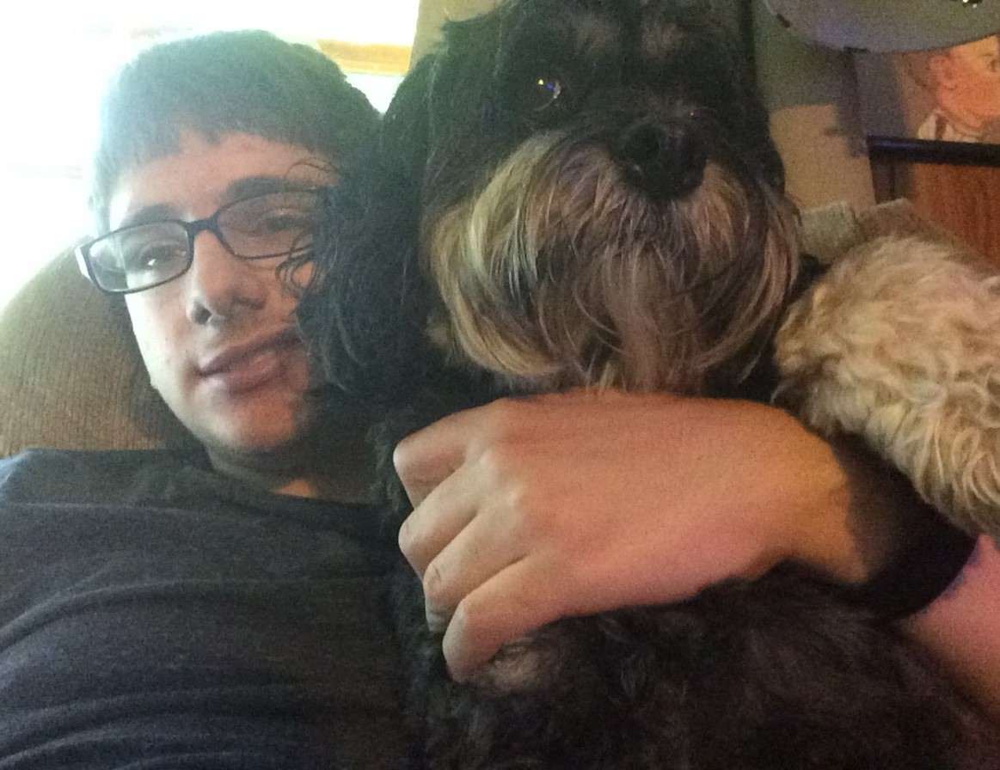

The purpose of this website is to inform the reader about my experiences with computer science. This website will be created by using the systems of HTML and CSS. The reader will find information about myself, the logo and images of this website, and information about my CS Projects.
